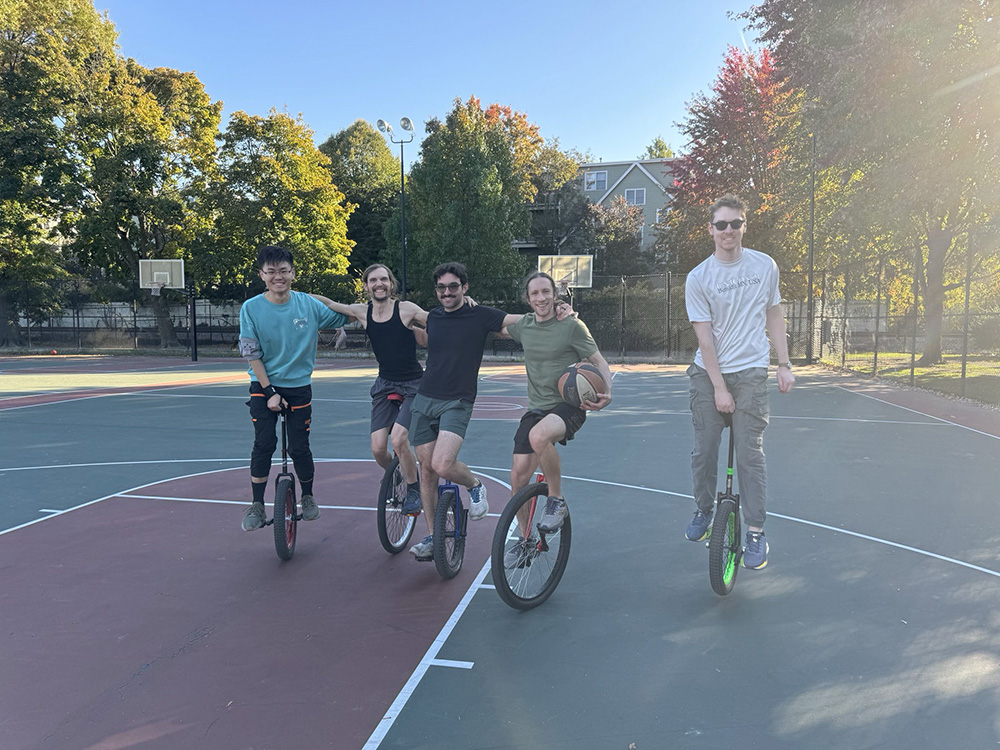
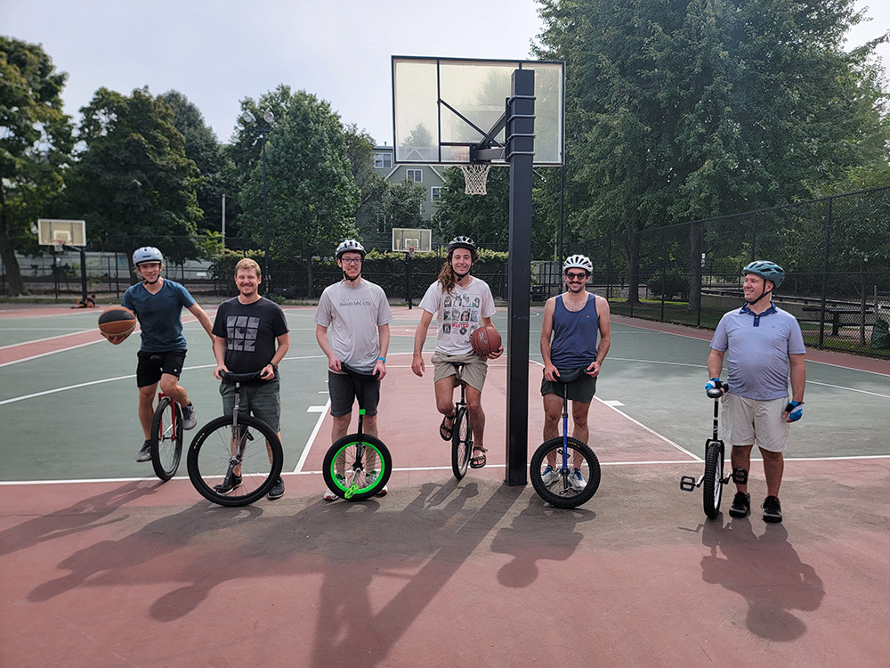
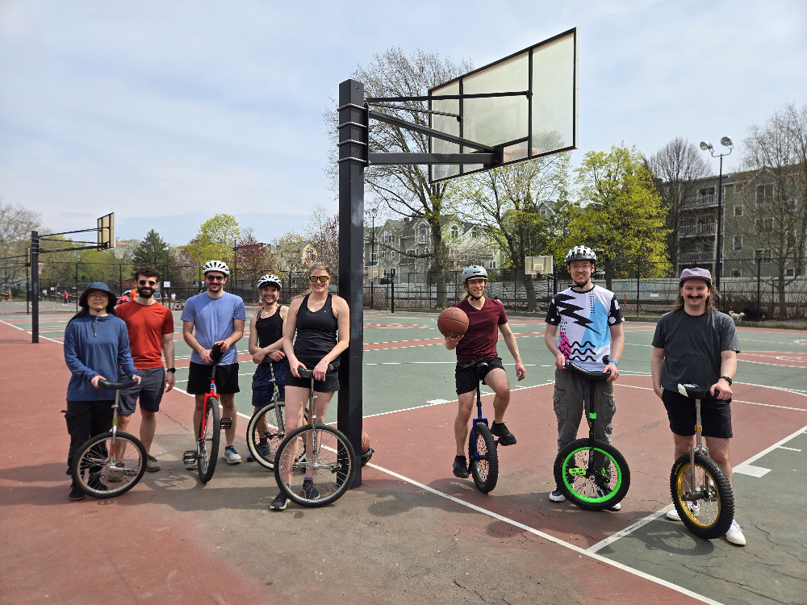

Unicycle Boston
Unicycle Boston is a unicycling club formed in August 2024 based in the Boston, Massachusetts area. We currently hold weekly meetups at various Boston locations.
Meetup Information
Unicycle Boston meetups are currently being co-located with the juggling group at MIT. The location is Lobby 10, located in Building 10, just inside the dome at MIT. All skill levels of unicycling from beginners to experts are welcome to come!
In the past Unicycle Boston events were held at Pemberton Basketball Courts located near Porter Square. We may use this space again in the future once outside temperatures drop to more manageable levels.
Calendar
Meetup.com Group
https://www.meetup.com/unicycle-boston/
Photos



Upcoming Conventions